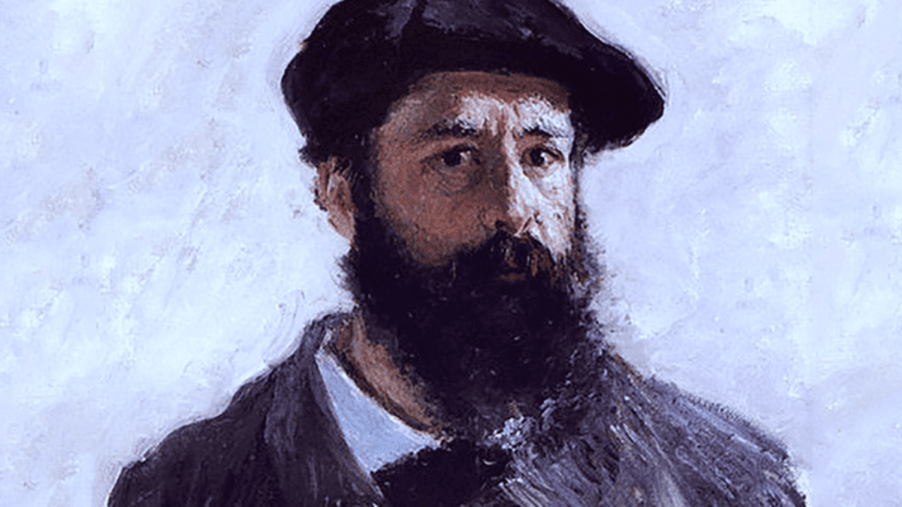

Edmund Cheng & Christian Huh
Presenting on
"Claude Monet"

Figure 2: Claude Monet
November 14, 1840 – December 5, 1926
Became first known for his charcoal caricatures
Studied the works of John Constable and Joseph Mallord William Turner - helped innovate in his study of color
Painted “Impression, Sunrise” - hung in the first impressionist exhibition in 1874
Became known for his paintings of controlled nature